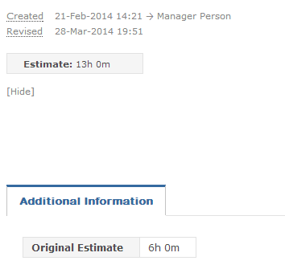

Original Estimate
The Original Estimate app allows you to retain the first entered estimate for an item, even after being changed.

How-To Configure Original Estimate
- Navigate to Customize > Apps > Event Apps.
- Enable the "Original Estimate" app.
- Create a custom textbox field named "Original Estimate".
- Navigate to Customize > Templates > Process
- Select the corresponding project template.
- Select the process that you wish to enable the original estimate field for.
- Ensure that the Original Estimate field is only enabled under the "Viewable" column
The Original Estimate field will now be populated under the "Additional Information" tab within the process that you enabled it for.
When creating an item, this field will appear blank. After the second Estimate is entered, the Original Estimate field will be populated with the original estimate.